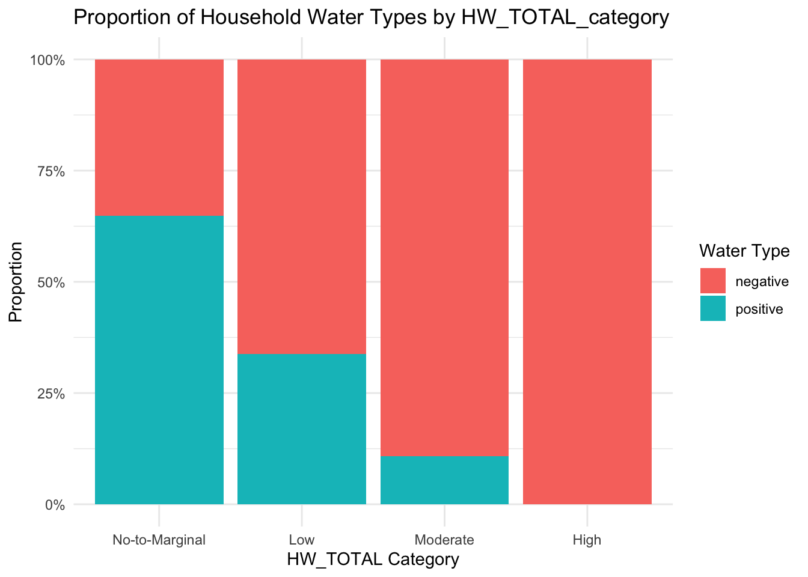

HBA2025_results
Paloma
2025-03-06
Last updated: 2025-03-07
Checks: 6 1
Knit directory: QUAIL-Mex/
This reproducible R Markdown analysis was created with workflowr (version 1.7.1). The Checks tab describes the reproducibility checks that were applied when the results were created. The Past versions tab lists the development history.
The R Markdown file has unstaged changes. To know which version of
the R Markdown file created these results, you’ll want to first commit
it to the Git repo. If you’re still working on the analysis, you can
ignore this warning. When you’re finished, you can run
wflow_publish to commit the R Markdown file and build the
HTML.
Great job! The global environment was empty. Objects defined in the global environment can affect the analysis in your R Markdown file in unknown ways. For reproduciblity it’s best to always run the code in an empty environment.
The command set.seed(20241009) was run prior to running
the code in the R Markdown file. Setting a seed ensures that any results
that rely on randomness, e.g. subsampling or permutations, are
reproducible.
Great job! Recording the operating system, R version, and package versions is critical for reproducibility.
Nice! There were no cached chunks for this analysis, so you can be confident that you successfully produced the results during this run.
Great job! Using relative paths to the files within your workflowr project makes it easier to run your code on other machines.
Great! You are using Git for version control. Tracking code development and connecting the code version to the results is critical for reproducibility.
The results in this page were generated with repository version 4c407eb. See the Past versions tab to see a history of the changes made to the R Markdown and HTML files.
Note that you need to be careful to ensure that all relevant files for
the analysis have been committed to Git prior to generating the results
(you can use wflow_publish or
wflow_git_commit). workflowr only checks the R Markdown
file, but you know if there are other scripts or data files that it
depends on. Below is the status of the Git repository when the results
were generated:
Ignored files:
Ignored: .DS_Store
Ignored: .RData
Ignored: .Rhistory
Ignored: .Rproj.user/
Ignored: analysis/.DS_Store
Ignored: analysis/.RData
Ignored: analysis/.Rhistory
Ignored: code/.DS_Store
Ignored: data/.DS_Store
Untracked files:
Untracked: Cleaned_Dataset_Screening_HWISE_PSS_V2.csv
Untracked: analysis/Cleaned_Dataset_Screening_HWISE_PSS_V2.csv
Untracked: data/Filtered_Screening.csv
Unstaged changes:
Modified: analysis/HBA2025_Analyses.Rmd
Modified: analysis/HBA2025_cleaning.Rmd
Modified: analysis/MX28_plots.Rmd
Modified: analysis/Regression-Analysis_PC.Rmd
Modified: data/Cleaned_Dataset_Screening_HWISE_PSS_V3.csv
Note that any generated files, e.g. HTML, png, CSS, etc., are not included in this status report because it is ok for generated content to have uncommitted changes.
These are the previous versions of the repository in which changes were
made to the R Markdown (analysis/MX28_plots.Rmd) and HTML
(docs/MX28_plots.html) files. If you’ve configured a remote
Git repository (see ?wflow_git_remote), click on the
hyperlinks in the table below to view the files as they were in that
past version.
| File | Version | Author | Date | Message |
|---|---|---|---|---|
| Rmd | 4c407eb | Paloma | 2025-03-07 | add question 28 |
| html | 4c407eb | Paloma | 2025-03-07 | add question 28 |
# Load necessary libraries
library(ggplot2)
library(dplyr)
Attaching package: 'dplyr'The following objects are masked from 'package:stats':
filter, lagThe following objects are masked from 'package:base':
intersect, setdiff, setequal, unionlibrary(corrplot)corrplot 0.95 loaded# Read the dataset
data <- read.csv("./data/Cleaned_Dataset_Screening_HWISE_PSS_V3.csv")
data$MX28_WQ_COMP <- as.numeric(data$MX28_WQ_COMP)
keep_columns <- c("MX28_WQ_COMP",
"D_LOC_TIME",
"D_AGE",
"D_HH_SIZE",
"D_CHLD",
"HLTH_SMK",
"SES_SC_Total",
"SEASON",
"HW_TOTAL",
"W_WC_WI",
"W_WS_LOC",
"HRS_WEEK")
data <- data %>%
select(keep_columns)Warning: Using an external vector in selections was deprecated in tidyselect 1.1.0.
ℹ Please use `all_of()` or `any_of()` instead.
# Was:
data %>% select(keep_columns)
# Now:
data %>% select(all_of(keep_columns))
See <https://tidyselect.r-lib.org/reference/faq-external-vector.html>.
This warning is displayed once every 8 hours.
Call `lifecycle::last_lifecycle_warnings()` to see where this warning was
generated.# Check if the column exists
if("MX28_WQ_COMP" %in% colnames(data)) {
# Select numeric columns for correlation analysis
numeric_data <- data %>% select(where(is.numeric))
# Compute correlation matrix
correlation_matrix <- cor(numeric_data, use = "pairwise.complete.obs")
# Extract correlations with MX28_WQ_COMP
correlations <- as.data.frame(correlation_matrix["MX28_WQ_COMP", ])
correlations$Variable <- rownames(correlations)
colnames(correlations)[1] <- "Correlation"
# Print correlation values sorted in descending order
print(correlations %>% arrange(desc(Correlation)))
# Visualize correlation matrix as a heatmap
corrplot(correlation_matrix, method = "color", type = "upper", tl.col = "black", tl.srt = 45)
} Correlation Variable
MX28_WQ_COMP 1.000000000 MX28_WQ_COMP
HRS_WEEK 0.187468292 HRS_WEEK
HLTH_SMK 0.054375849 HLTH_SMK
D_HH_SIZE 0.015907200 D_HH_SIZE
D_LOC_TIME 0.011858719 D_LOC_TIME
D_CHLD -0.004489633 D_CHLD
SEASON -0.033107994 SEASON
HW_TOTAL -0.086129588 HW_TOTAL
SES_SC_Total -0.094563601 SES_SC_Total
D_AGE -0.131738320 D_AGE
W_WC_WI -0.174376672 W_WC_WI
W_WS_LOC -0.226542933 W_WS_LOC
| Version | Author | Date |
|---|---|---|
| 4c407eb | Paloma | 2025-03-07 |
Comparing to Mexico City’s water supply
# visualize data from Q28
# Convert selected variables to factors
categorical_vars <- c("MX28_WQ_COMP", "HLTH_SMK", "SEASON", "W_WC_WI", "W_WS_LOC")
data <- data %>%
mutate(across(all_of(categorical_vars), as.factor))
# Verify conversion
str(data[categorical_vars])'data.frame': 402 obs. of 5 variables:
$ MX28_WQ_COMP: Factor w/ 3 levels "0","1","2": 1 3 2 1 3 1 2 2 2 1 ...
$ HLTH_SMK : Factor w/ 2 levels "0","1": 1 2 1 1 1 NA NA 1 1 1 ...
$ SEASON : Factor w/ 2 levels "0","1": 2 2 2 2 2 2 2 2 2 2 ...
$ W_WC_WI : Factor w/ 2 levels "0","1": 2 1 2 2 2 2 2 2 2 2 ...
$ W_WS_LOC : Factor w/ 2 levels "0","1": 2 2 2 2 2 2 2 2 2 2 ...# Define the main categorical variable
main_var <- "MX28_WQ_COMP"
# Convert MX28_WQ_COMP to a factor and ensure levels are correct
data$MX28_WQ_COMP <- factor(data$MX28_WQ_COMP)
# Check unique levels to confirm
print(levels(data$MX28_WQ_COMP))[1] "0" "1" "2"# Rename levels of MX28_WQ_COMP
levels(data$MX28_WQ_COMP) <- c("Worse", "Same", "Better")
# Verify that levels have been updated
print(levels(data$MX28_WQ_COMP))[1] "Worse" "Same" "Better"# Print factor levels to confirm
levels(data$MX28_WQ_COMP)[1] "Worse" "Same" "Better"# Exclude MX28_WQ_COMP from the list of categorical variables
cat_vars <- setdiff(categorical_vars, main_var)
# Define the main categorical variable
main_var <- "MX28_WQ_COMP"
# Generate bar plots
for (var in cat_vars) {
p <- ggplot(data, aes_string(x = main_var, fill = var)) +
geom_bar(position = "dodge") +
theme_minimal() +
labs(title = paste("Bar Plot of", main_var, "vs", var),
x = main_var, y = "Count", fill = var)
print(p) # Display each bar plot
}Warning: `aes_string()` was deprecated in ggplot2 3.0.0.
ℹ Please use tidy evaluation idioms with `aes()`.
ℹ See also `vignette("ggplot2-in-packages")` for more information.
This warning is displayed once every 8 hours.
Call `lifecycle::last_lifecycle_warnings()` to see where this warning was
generated.


# Define the main categorical variable
main_var <- "MX28_WQ_COMP"
# Exclude MX28_WQ_COMP from the list of categorical variables
cat_vars <- setdiff(categorical_vars, main_var)
# Generate bar plots with percentages
for (var in cat_vars) {
p <- ggplot(data, aes_string(x = main_var, fill = var)) +
geom_bar(aes(y = (..count..) / sum(..count..) * 100), position = "fill") +
scale_y_continuous(labels = scales::percent_format(scale = 1)) + # Convert to percentage format
theme_minimal() +
labs(title = paste("Percentage Bar Plot of", main_var, "vs", var),
x = main_var, y = "Percentage", fill = var)
print(p) # Display each bar plot
}Warning: The dot-dot notation (`..count..`) was deprecated in ggplot2 3.4.0.
ℹ Please use `after_stat(count)` instead.
This warning is displayed once every 8 hours.
Call `lifecycle::last_lifecycle_warnings()` to see where this warning was
generated.

sessionInfo()R version 4.4.3 (2025-02-28)
Platform: aarch64-apple-darwin20
Running under: macOS Sequoia 15.3.1
Matrix products: default
BLAS: /Library/Frameworks/R.framework/Versions/4.4-arm64/Resources/lib/libRblas.0.dylib
LAPACK: /Library/Frameworks/R.framework/Versions/4.4-arm64/Resources/lib/libRlapack.dylib; LAPACK version 3.12.0
locale:
[1] en_US.UTF-8/en_US.UTF-8/en_US.UTF-8/C/en_US.UTF-8/en_US.UTF-8
time zone: America/Detroit
tzcode source: internal
attached base packages:
[1] stats graphics grDevices utils datasets methods base
other attached packages:
[1] corrplot_0.95 dplyr_1.1.4 ggplot2_3.5.1
loaded via a namespace (and not attached):
[1] gtable_0.3.6 jsonlite_1.8.9 crayon_1.5.3 compiler_4.4.3
[5] promises_1.3.0 tidyselect_1.2.1 Rcpp_1.0.13-1 stringr_1.5.1
[9] git2r_0.35.0 later_1.3.2 jquerylib_0.1.4 scales_1.3.0
[13] yaml_2.3.10 fastmap_1.2.0 R6_2.5.1 labeling_0.4.3
[17] generics_0.1.3 workflowr_1.7.1 knitr_1.49 tibble_3.2.1
[21] munsell_0.5.1 rprojroot_2.0.4 bslib_0.8.0 pillar_1.9.0
[25] rlang_1.1.4 utf8_1.2.4 cachem_1.1.0 stringi_1.8.4
[29] httpuv_1.6.15 xfun_0.49 fs_1.6.5 sass_0.4.9
[33] cli_3.6.3 withr_3.0.2 magrittr_2.0.3 digest_0.6.37
[37] grid_4.4.3 rstudioapi_0.17.1 lifecycle_1.0.4 vctrs_0.6.5
[41] evaluate_1.0.1 glue_1.8.0 farver_2.1.2 whisker_0.4.1
[45] colorspace_2.1-1 fansi_1.0.6 rmarkdown_2.29 tools_4.4.3
[49] pkgconfig_2.0.3 htmltools_0.5.8.1